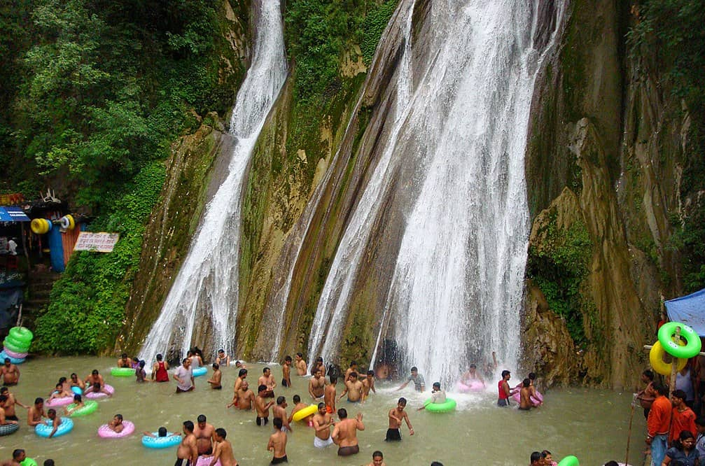
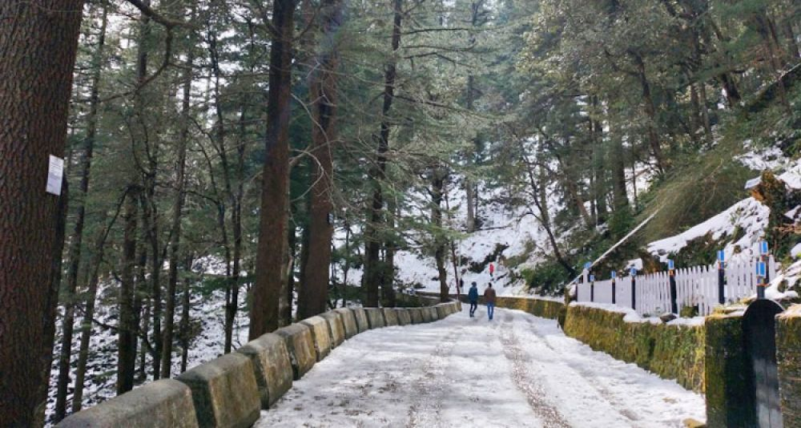
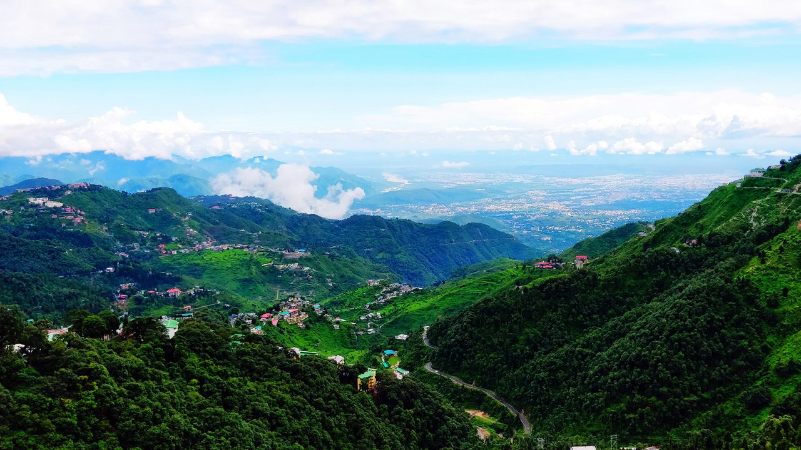
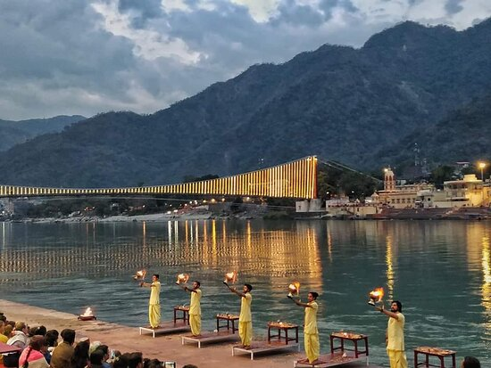
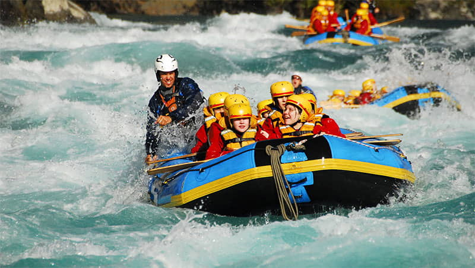
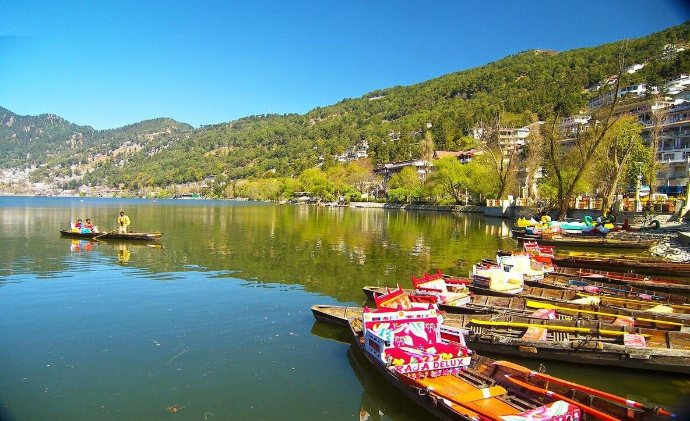
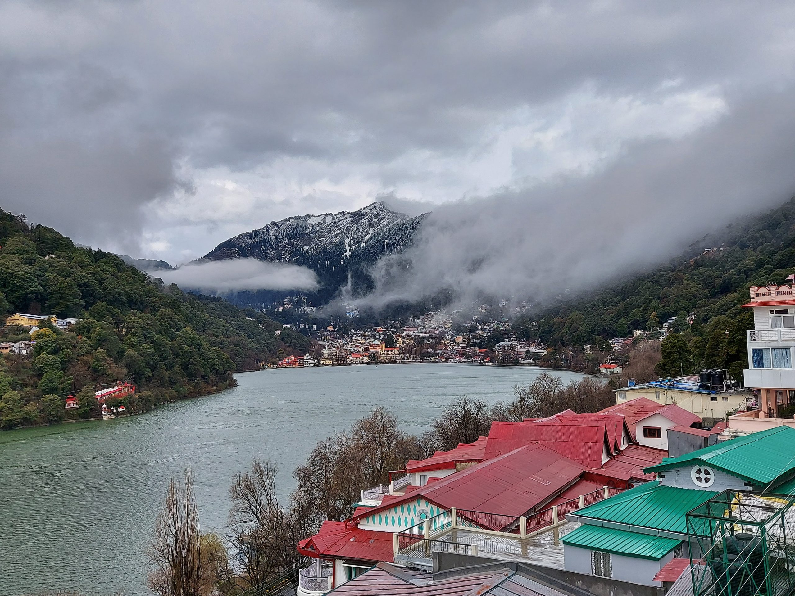
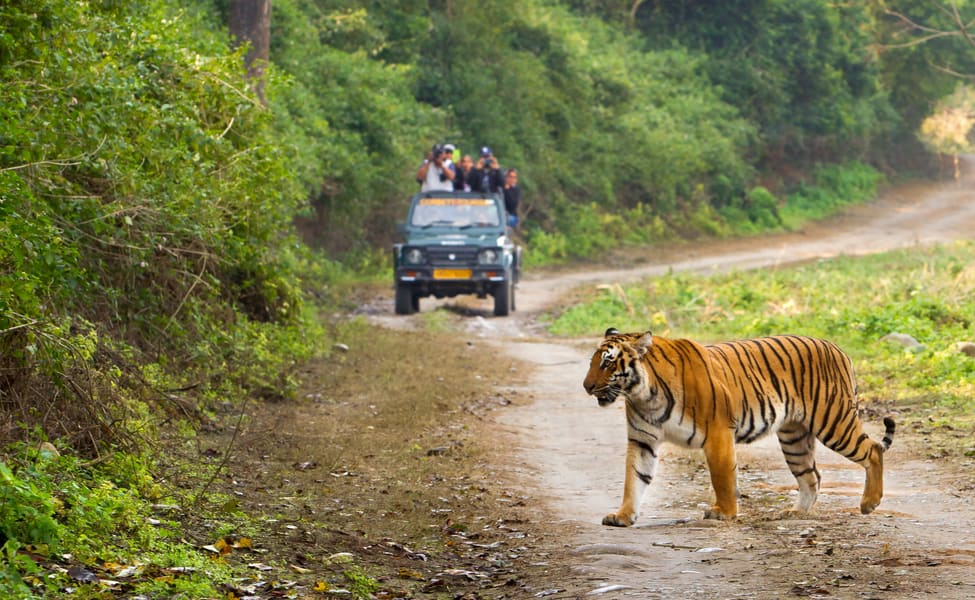

Upon arrival at the airport, you will be greeted and assisted with your transfer to Mussoorie, a
picturesque hill station known as the "Queen of the Hills." Enjoy the scenic drive through winding
roads and lush green landscapes, offering glimpses of the majestic Himalayan ranges. Upon reaching
Mussoorie, check in to your hotel and take some time to relax and freshen up. In the evening, enjoy
a delightful dinner at the hotel, savoring local cuisine and taking in the serene ambiance. Reflect on
the day's journey and unwind, preparing for the adventures that await you in Mussoorie.
Mussoorie is a popular hill station in Uttarakhand, India, offering breathtaking views of the
Himalayas and lush green valleys. It attracts tourists with its pleasant climate, scenic spots like
Kempty Falls and Gun Hill, and colonial-era architecture. The Mall Road, the heart of Mussoorie, is
bustling with shops, cafes, and entertainment, perfect for a leisurely stroll. Additionally, nearby
attractions like Dhanaulti & Kanatal will provide ample opportunities for day excursion.
Distance: 290 Kms - 7 Hours Drive
After breakfast at the hotel, embark on a full-day sightseeing tour of Mussoorie. Start your tour at
Kempty Falls, a stunning waterfall where you can enjoy the refreshing cascades and take memorable
photos. Visit Bhatta Falls which is another waterfall in Mussoorie.
Enjoy shopping for souvenirs, local handicrafts, and tasting some local delicacies. Next, visit Gun Hill,
the second-highest peak in Mussoorie, accessible by a cable car ride (At own cost) from Mall Road
that offers panoramic views of the Doon Valley and the Himalayas.
For Landour our car will drop at Picture palace near Mall road, guests will need to hire a bike at own
cost.
Return to your hotel in the evening for a delightful dinner. After dinner, relax and unwind, reflecting
on the day's experiences. Enjoy a comfortable overnight stay at the hotel.
Important Note: Lal Tibba, George Everest, Cloud End and Landour our car will not go due to very
narrow roads. Mall Road our car is not allowed.
If heavy traffic on the route to Picture Palace, our may drop at a distance 200-500 meters before
Picture Palace to save guests time.


After breakfast at your hotel, check out from the hotel. Transfer to Rishikesh via Dehradun. Embark on a full-day sightseeing tour of Dehradun, beginning with the unique Robber's Cave, where you can walk through cool waters amidst high rock walls, followed by the serene Sahastradhara with its therapeutic sulfur springs. Visit the impressive Mindrolling Monastery to explore its stupa and murals, then head to the Forest Research Institute for a guided tour of its grand colonial architecture and lush grounds. Continue to the Tapkeshwar Temple, a revered Hindu shrine set in a natural cave, and then explore the bustling Clock Tower and Paltan Bazaar for shopping and local delicacies. Upon reaching Rishikesh, check in to your hotel and take some time to relax and freshen up. In the evening, enjoy a delightful dinner and a comfortable overnight stay
After breakfast at the hotel, embark on a full-day sightseeing tour of Rishikesh, a city renowned for
its spiritual and scenic beauty.
Visit the Lakshman Temple and the famous Lakshman Jhula, a historic suspension bridge. Although
the bridge is closed for crossing, it remains a must-visit spot for photography and soaking in the
panoramic views of the Ganges and the surrounding hills.
Next, head to the Ram Jhula area. From the car parking, explore prominent attractions like Ram
Jhula, Swargashram Temple, Gita Bhawan, Parmarth Niketan Ashram, and the recently built Janki
Setu (Approx 2.5 Kms walk to cover this spots). These sites offer a mix of spiritual insight, cultural
charm, and serene river views, making it a fulfilling experience.
After the sightseeing tour, check in to your hotel in Rishikesh and take some time to relax. In the
evening, visit Triveni Ghat to witness the mesmerizing Ganga Aarti, a spiritually uplifting ritual on
the banks of the Ganges. Conclude your day with a delicious dinner and enjoy a restful overnight stay
at the hotel in Rishikesh.
Important Note: For vehicles like Tempo Travellers / Bus Parking place is little far form Ram Jhula and
Triveni Ghat which guest can use Auto Rickshaw at own cost. During heavy traffic days better to use
Auto Rickshaw at own cost for local use as vehicles have to use bypass roads.


Start your day with a hearty breakfast at the hotel in Rishikesh, then check out and begin your journey to Nainital. En route, make a short stop at Har Ki Pauri in Haridwar, a sacred ghat on the banks of the Ganges River. This iconic spot is known for its spiritual significance and serene atmosphere, where you can take a moment to experience the peaceful surroundings. After your brief visit, continue your drive through the scenic landscapes of Uttarakhand, heading towards Nainital, a picturesque hill station known for its natural beauty. Upon arrival in Nainital, check in to your hotel and take some time to relax after the journey. The evening is free for you to unwind or explore the local surroundings at your leisure. End your day with a delicious dinner and a restful overnight stay at the hotel in Nainital.
After breakfast, embark on a local sightseeing tour. Visit Sariya Tal, Lovers Point, Lake View Point,
Himalayan Botanical Garden & Cave Garden. You can also enjoy trek to Tiffin Top (By Horse Ride at
own cost). Later you can explore the areas near Naini Lake such as Mall Road, Naina Devi Temple,
Tibetan Market, Snow View Point (By Cable Car) & High Altitude Zoo from nearest Parking at own
cost. Enjoy an overnight stay in Nainital.
Important Note: Tempo Traveller / Buses are not allowed inside city so in that case local sightseeing
will be at extra cost by smaller Vehicles. Outside cars are generally not allowed for areas mentioned
near Naini Lake in sightseeing. Driver will drop to nearest Parking as per the situation and guest can
cover them by local vehicles at own cost / by walk.


Start your day with a breakfast at the hotel in Nainital, then check out and drive to Corbett National
Park. Upon arrival, check in to your hotel and relax for a while. Afterward, begin your Corbett
sightseeing with a visit to the Garjiya Devi Temple, a famous shrine dedicated to Goddess Garjiya,
located on the banks of the Kosi River. The temple offers stunning views of the river and surrounding
landscapes, making it a peaceful and spiritual stop.
Next, visit the Dhikala Museum at Dhikala Zone. This museum offers a glimpse into the history of
Corbett National Park, displaying wildlife-related exhibits and showcasing the rich flora and fauna of
the park. It’s an excellent way to learn more about the park's wildlife and its conservation efforts.
Guests can also do Jungle Safari in the park instead of Sightseeing. To participate, you will need to
reach the designated entry point before 2 PM. The safari offers an incredible opportunity to spot the
park's diverse wildlife, including tigers, elephants, and various species of birds.
After the safari, return to the hotel for a delicious dinner and a restful overnight stay.
Distance: 80 Kms - 2.5 Hours Approx
Important Note: Kindly book Jungle Safari as soon as possible as it may get sold out many days
before depending on rush. https://booking.corbettgov.org/#
After breakfast, check out from your hotel in Corbett and prepare for your journey back to Delhi.
Enjoy the scenic drive through the lush landscapes of Uttarakhand as you head towards the bustling
city. Upon arrival in Delhi, you will be dropped off at the airport or railway station, depending on
your departure details. Reflect on your memorable trip as you proceed with your onward journey.
Distance: 222 Kms - 5 Hours Approx
Important Note: In case of late flight / train if guests want to add Delhi local sightseeing or vehicle for
other purpose should let us know in advance at the time of booking. Standard Dropping time is 7pm
